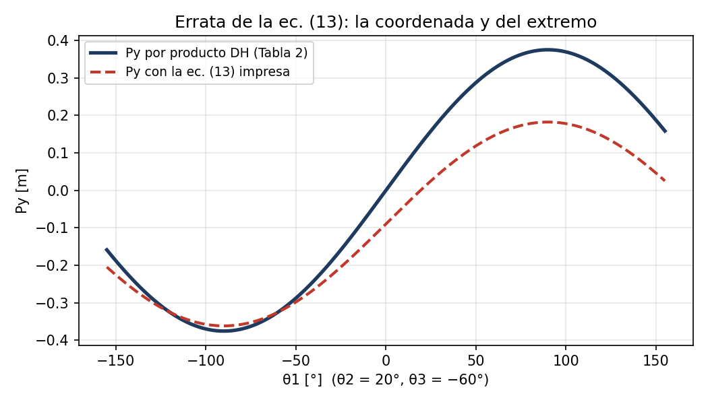
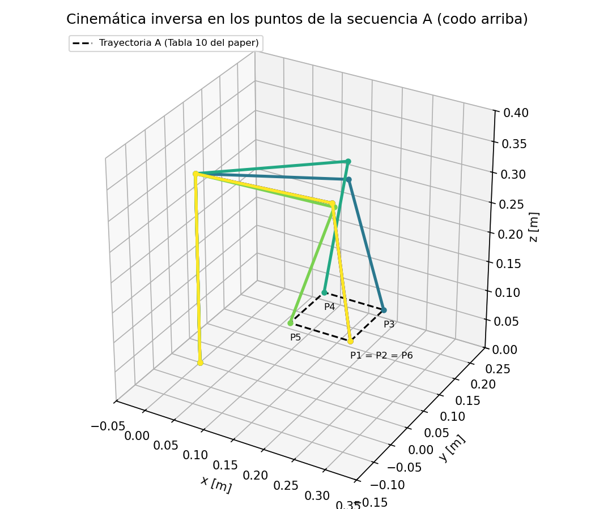
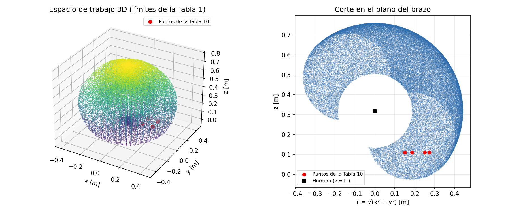
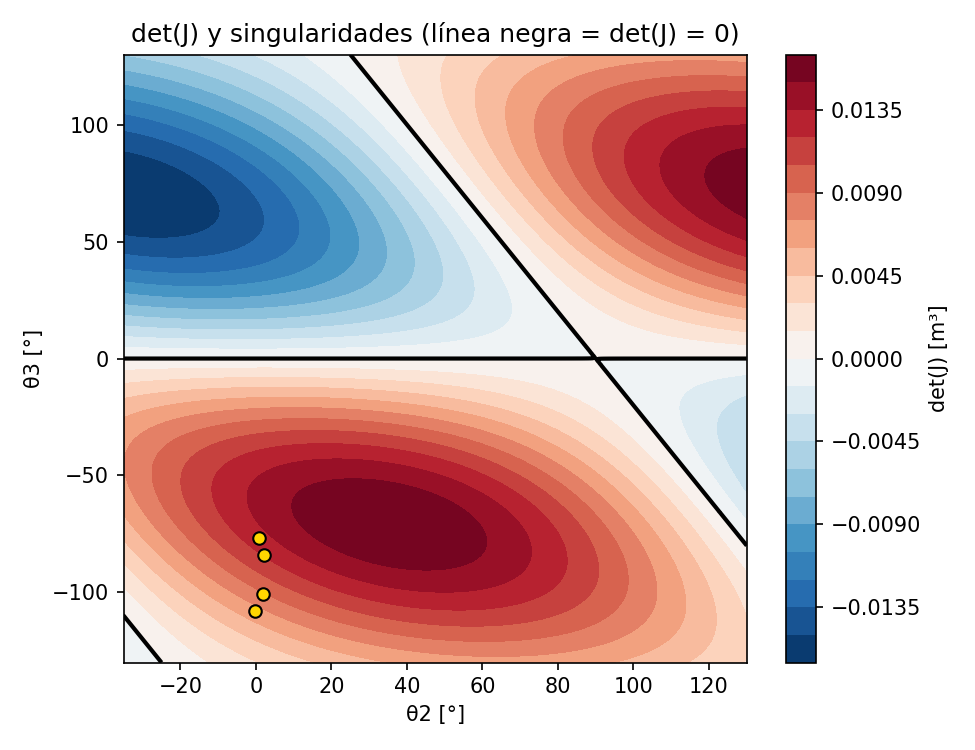
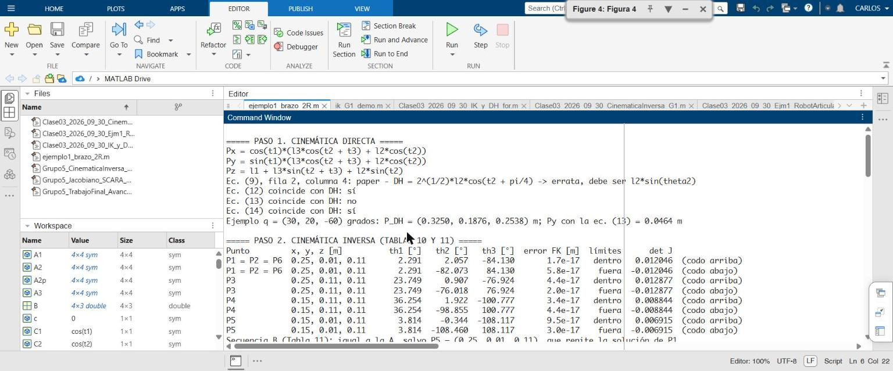
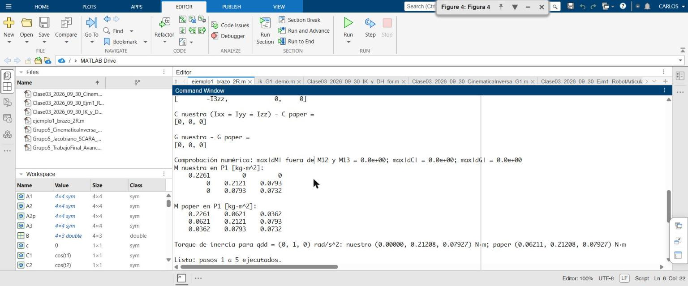
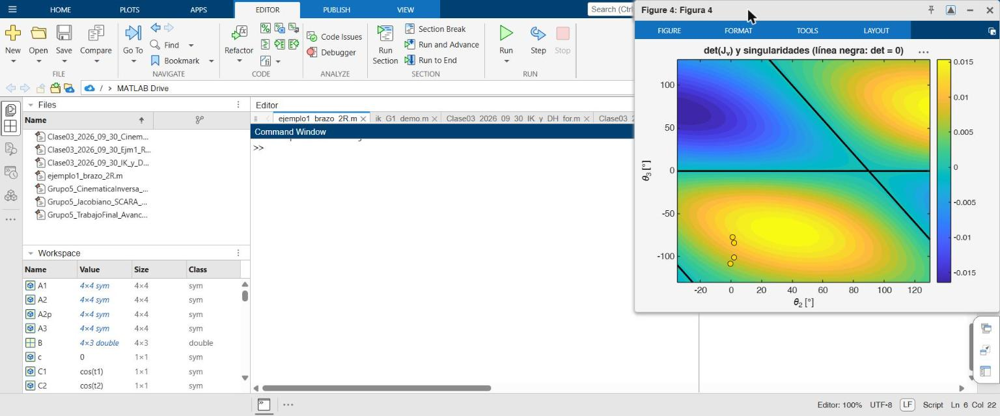

Datos del trabajo
Grupo 5
- René Abarca Urbano
- Ángel Joel Alvarado Crisanto
- Javier Alexander Fernández Purizaca
- Carlos Pérez Pérez
- Jorge Valega
Curso
- MIA-12 Robótica y Sistemas Autónomos
- Maestría en Inteligencia Artificial, ciclo 2026-2, sección B
- Docente: Mg. Wilson Dennis Reyes Vásquez
- Fecha del avance: 15 de octubre de 2026
Para que se distinga el origen de cada dato, usamos tres etiquetas: PAPER dato tomado del artículo (con tabla o ecuación), CÁLCULO resultado que obtuvimos con nuestro código y SUPUESTO decisión del grupo que debe validarse.
Resumen del avance
Elegimos como paper base el artículo de Urrea, Kern y Torres (2024), que modela los tres primeros ejes (base, hombro y codo) de un robot SCORBOT-ER V plus: un brazo antropomórfico con tres articulaciones de revolución. Con lo visto en clase (Denavit-Hartenberg, cinemática inversa geométrica y jacobiano) comprobamos el modelo del paper y completamos la parte del modelado que el artículo no desarrolla.
Además, al rehacer la dinámica de Euler-Lagrange obtuvimos las mismas matrices C y G del paper y casi toda la matriz de inercia M. La única diferencia está en los términos de acoplamiento M12 y M13: con nuestra derivación son cero. La explicamos en el paso 5 y la dejamos como consulta para la retroalimentación.
1. Qué pide el trabajo final
Requisitos del paper y del contenido (sesión 5, 14-10-2026)
| Requisito | Detalle |
|---|---|
| Robot | Antropomórfico de 3 GDL con articulaciones solo de revolución (RRR); no se admiten prismáticas |
| Antigüedad | De 4 a 5 años como máximo |
| Tipo de fuente | Paper o tesis |
| Datos dinámicos | Masas, centros de masa y tensores de inercia, necesarios para la dinámica y para generar el dataset |
| Objetivo | Reproducir los resultados del paper con los métodos del curso y comparar |
| Contenido obligatorio de la primera parte | Cinemática directa, espacio de trabajo, cinemática inversa, jacobiano y singularidades. Es el insumo de la dinámica, y la dinámica es el insumo del dataset para la parte de IA |
Rúbrica del proyecto final (sílabo, pp. 5-7)
| Criterio | Puntos | Cómo lo cubrimos |
|---|---|---|
| Planteamiento y relevancia del problema robótico | 3 | Comprobar y completar el modelo de un brazo RRR de 3 GDL publicado, para seguir trayectorias cartesianas |
| Modelado cinemático y dinámico | 3 | Avanzado: pasos 1 a 5 de esta página |
| Diseño e implementación del control y/o planificación | 3 | Pendiente: par calculado (reproducir el paper) y PID no lineal del curso |
| Integración de redes neuronales e IA | 3 | Pendiente: red neuronal entrenada con un dataset generado desde nuestro modelo y comparada con la solución clásica |
| Evaluación y validación de resultados | 3 | En curso: errores de la cinemática; luego RMS, RSD e IA como en el paper |
| Presentación y defensa | 5 | Demo en simulación con Python |
| Total | 20 |
2. Cómo elegimos el paper
Buscamos en fuentes de acceso abierto: revistas indexadas en inglés, tesis en español (incluido el repositorio de la UNI) y trabajos que aplican redes neuronales a brazos de 3 GDL. Reunimos 35 fuentes únicas, además de 6 artículos de una revisión inicial, y descartamos las que no cumplían los requisitos. Las cuatro mejores las revisamos abriendo el PDF completo.
| # | Fuente | Año | RRR | DH y longitudes | Masas, centros de masa e inercia | Resultados numéricos | Decisión |
|---|---|---|---|---|---|---|---|
| 1 | Urrea, Kern y Torres, Applied Sciences 14(23):11010 | 2024 | Sí | Sí | Masas, centros de masa e Izz | Sí (Tabla 12) | Elegido |
| 2 | Kern, Marrero y Urrea, Processes 11(12):3267 | 2023 | Sí | Sí | Solo simbólicos | Sí | Apoyo |
| 3 | Susanto, Sumaryo y Hassan, JRC 6(5) | 2025 | Sí | Solo longitudes | Parcial | Inconsistentes | Descartado |
| 4 | Ruiz Alvarado, tesis UNI-FIM | 2025 | Sí | Sí | No | Sí | Apoyo (cinemática inversa y trayectorias) |
Por qué el n.º 1: es la única fuente que reúne tabla DH, longitudes, masas, centros de masa, momentos de inercia, fricción y resultados numéricos de seguimiento de trayectoria. Su parte de control (par calculado, PD-PI difuso, MPC) coincide con los esquemas de la rúbrica.
Artículos revisados
Revisamos 41 artículos: 35 de la búsqueda sistemática y 6 de la revisión inicial. Incluimos en el repositorio el PDF de los que tienen una licencia que permite compartirlos (Creative Commons), sin modificar y con su atribución; el resto se cita con su enlace. El catálogo completo también está en articulos/.
Paper base y los otros cinco principales del ranking
| # | Referencia | Licencia | Acceso | Qué aporta / por qué no es la base |
|---|---|---|---|---|
| 1 | Urrea, C.; Kern, J.; Torres, V. (2024). Design, Simulation, and Comparison of Advanced Control Strategies for a 3-Degree-of-Freedom Robot. Applied Sciences, 14(23), 11010. | CC BY 4.0 | PDF · enlace | Paper base. RRR (SCORBOT-ER V plus, 3 ejes), tabla DH, masas, centros de masa, Izz, fricción y resultados numéricos (Tabla 12). |
| 2 | Kern, J.; Marrero, D.; Urrea, C. (2023). Fuzzy Control Strategies Development for a 3-DoF Robotic Manipulator in Trajectory Tracking. Processes, 11(12), 3267. | CC BY 4.0 | PDF · enlace | Apoyo: mismos autores del paper base, RRR con tabla DH y resultados (control difuso y ANFIS). Los parámetros dinámicos son solo simbólicos. |
| 3 | Susanto, E.; Sumaryo, S.; Hassan, M. F. (2025). Tracking Improvement of a 3-DOF Arm Robot using Computed Torque and Adaptive Sliding Mode Controls. Journal of Robotics and Control, 6(5), 2436-2443. | CC BY-SA 4.0 | enlace | RRR con M, C y G explícitas y longitudes, pero solo da masas de 240 g, las inercias sin valor y el RMSE sin unidades. La trayectoria (~122 cm) supera el alcance del robot (~77 cm). |
| 4 | Ruiz Alvarado, J. D. (2025). Diseño de trayectorias usando el método trapezoidal y el algoritmo de cinemática inversa de segundo orden aplicado al control tracking de un manipulador de tres grados de libertad. Tesis de Ingeniero Mecatrónico, Facultad de Ingeniería Mecánica, Universidad Nacional de Ingeniería. | CC BY-NC-ND 4.0 | PDF · enlace | Apoyo: tesis UNI con tabla DH, cinemática inversa y trayectorias trapezoidales de un brazo de 3 GDL. No publica masas. |
| 5 | Ramírez-Vasquez, J. F.; Carlock-Acevedo, E. J.; Castro-Ramírez, J. (2024). Inverse kinematics using neural networks and random forests for trajectory tracking of a three-degree-of-freedom robotic arm. Alianzas y Tendencias BUAP, 9(EIA), 1-23. | CC BY 4.0 | PDF · enlace | Apoyo para la parte de IA: cinemática inversa con redes neuronales y random forests en un brazo de 3 GDL. |
| 6 | Sharkawy, A.-N.; Khairullah, S. S. (2023). Forward and Inverse Kinematics Solution of A 3-DOF Articulated Robotic Manipulator Using Artificial Neural Network. International Journal of Robotics and Control Systems, 3(2), 330-353. | CC BY-SA 4.0 | PDF · enlace | Apoyo para la parte de IA: cinemática directa e inversa con redes neuronales en un brazo articulado de 3 GDL. |
Resto de la búsqueda (29 fuentes)
| # | Referencia | Licencia | Acceso | Por qué se descartó |
|---|---|---|---|---|
| 7 | Saraf, P.; Ponnalagu, R. N. (2020). Modeling and Simulation of a Point to Point Spherical Articulated Manipulator using Optimal Control. Preprint arXiv:2010.13574. | Licencia arXiv no exclusiva (no permite redistribuir) | enlace | Anterior a 2021 y solo da la masa total (2.5 kg). Su cinemática inversa sirve como ejercicio de validación. |
| 8 | Zhou, Z.; Zhang, Y.; Li, Y. (2022). Model Predictive Control Design of a 3-DOF Robot Arm Based on Recognition of Spatial Coordinates. Preprint arXiv:2209.01706. | Licencia arXiv no exclusiva (no permite redistribuir) | enlace | RRR y reciente, pero la DH es solo simbólica, sin masas ni resultados comparables. |
| 9 | Ly, L.; Srang, S.; Van, D. (2020). Modeling, Control and Simulation on 3DOF Robot Manipulator. Techno-Science Research Journal, 8, 113-119. | Sin licencia declarada | enlace | Anterior a 2021; todos los parámetros son simbólicos. |
| 10 | Sadegh Lafmejani, H.; Zarabadipour, H. (2014). Modeling, Simulation and Position Control of 3DOF Articulated Manipulator. Indonesian Journal of Electrical Engineering and Informatics, 2(3). | Sin licencia declarada | sin enlace público | Anterior a 2021; no se pudo leer el texto completo. |
| 11 | Rojas-Moreno, A. (2017). MIMO nonlinear control of a 3DOF robot arm. 2017 Electronic Congress (E-CON UNI), IEEE, 1-4. | © IEEE, derechos reservados | enlace | Anterior a 2021 y de acceso cerrado. |
| 12 | Saad, M.; Hussain, S. (2024). Simulation and optimization of computed torque control 3 DOF RRR manipulator using MATLAB. Preprint arXiv:2409.04785. | CC BY 4.0 | enlace | RRR y reciente, pero sin masas, inercias ni DH; los resultados están solo en gráficas. |
| 13 | Agustian, I.; Daratha, N.; Faurina, R.; Suandi, A.; Sulistyaningsih (2021). Robot Manipulator Control with Inverse Kinematics PD-Pseudoinverse Jacobian and Forward Kinematics Denavit Hartenberg. Jurnal Elektronika dan Telekomunikasi, 21(1), 8-18. | CC BY-NC-SA 4.0 | enlace | Brazo MeArm de 5 GDL reducido a 3 y sin dinámica. Sirve como referencia de cinemática inversa con la pseudoinversa del jacobiano. |
| 14 | González Rodríguez, A.; Pineda Ortega, M.; Soberanes Leal, D. M. (2007). Seguimiento adaptativo de trayectorias con convergencia en tiempo finito de un robot antropomórfico virtual de tres grados de libertad. Tesis de licenciatura, Universidad Autónoma del Estado de Hidalgo. | Sin licencia declarada | enlace | Muy anterior a 2021. |
| 15 | Hernández Torres, L. R. (2015). Diseño y control de un brazo robótico de 3 grados de libertad. Tesis de Ingeniero Eléctrico y Electrónico, Universidad Nacional Autónoma de México. | Derechos reservados (según el PDF) | enlace | Anterior a 2021 y sin masas por eslabón. |
| 16 | Torre Moreno, M. V.; Medina Ruiz, J. (2019). Control de trayectorias de robot articulado utilizando redes neuronales. Trabajo de bachiller, Universidad Tecnológica del Perú. | CC BY-NC-SA 4.0 (según el registro de ALICIA) | enlace | Anterior a 2021; la tabla DH y el código no coinciden. |
| 17 | Sanabria Ariza, R. Y.; Ortiz Herrán, D. S. (2015). Diseño de un brazo robótico clasificador de objetos. Trabajo de grado, Universidad Pedagógica Nacional (Bogotá). | CC BY-NC-ND 4.0 | enlace | Anterior a 2021, con parámetros inconsistentes. |
| 18 | Montenegro Alcívar, G. N.; Yaguachi Ríos, M. L. (2020). Diseño, construcción y control de un prototipo de brazo robótico antropomórfico para la soldadura por punto de diferentes figuras, mediante el uso de cinemática inversa y visión artificial. Proyecto de titulación, Universidad Politécnica Salesiana (Quito). | CC BY-NC-ND 3.0 Ecuador | enlace | Anterior a 2021; mecanismo no estándar y sin DH numérica. |
| 19 | Jáñez Vaz, I. M. (2021). Diseño, impresión 3D, modelado y control de un brazo robótico de 3 grados de libertad. Trabajo Fin de Máster, Universidad de Sevilla. | CC BY-NC-ND 4.0 | enlace | Cumple RRR y año, y desarrolla cinemática directa e inversa, jacobiano y singularidades. Solo da masas de las piezas de PLA y no publica tablas de resultados. |
| 20 | Salazar Saldaña, R. (2019). Diseño de un controlador por modo deslizante para un manipulador robótico angular de tres grados de libertad. Tesis de título profesional, Universidad Nacional de Ingeniería. | Acceso restringido | enlace | Anterior a 2021 y de acceso restringido. |
| 21 | Jara Sandoval, V. O. (2014). Implementación de un sistema de control de posición PIDOF para un manipulador angular de 3gdl. Tesis de maestría, Universidad Nacional de Ingeniería. | Acceso restringido | enlace | Anterior a 2021 y de acceso restringido. |
| 22 | Crisóstomo Reyna, J. C. (2024). Diseño de un controlador descentralizado por retroalimentación de posición y velocidad para mejorar el control de posición de un robot de tres grados de libertad. Tesis de Ingeniero Mecatrónico, Facultad de Ingeniería Mecánica, Universidad Nacional de Ingeniería. | CC BY-NC-ND 4.0 | enlace | Reciente, pero no da d1, a2, a3 ni masas de los eslabones; solo parámetros de motor. |
| 23 | Ventura Hinostroza, H. H. (2019). Diseño e implementación de un controlador difuso adaptativo para un robot de 3-GDL. Tesis de maestría, Facultad de Ingeniería Eléctrica y Electrónica, Universidad Nacional de Ingeniería. | CC BY-NC-ND 4.0 | enlace | Emitida en 2019. Es la única fuente con masas, centros de masa, fórmulas de inercia y parámetros de motor; queda como referencia secundaria. |
| 24 | Kariuki, S.; Wanjau, E.; Muchiri, I.; Muguro, J.; Njeri, W.; Sasaki, M. (2024). Pick and Place Control of a 3-DOF Robot Manipulator Based on Image and Pattern Recognition. Machines, 12(9), 665. | CC BY 4.0 | enlace | MeArm de doble paralelogramo modelado como RRR, sin dinámica; las trayectorias están solo en figuras. |
| 25 | Shukur, F.; Mosa, S. J.; Raheem, K. M. H. (2024). Optimization of Fuzzy-PD Control for a 3-DOF Robotics Manipulator Using a Back-Propagation Neural Network. Mathematical Modelling of Engineering Problems, 11(1), 199-209. | CC BY 4.0 | enlace | Es un brazo 3R planar, aunque el texto lo llame RRR. |
| 26 | Torres, H. M.; Cordero, P. A.; Torres, B.; Urrea, C.; Kern, J. (2024). Model Development and Simulation of a 3-DoF Manipulator Robot for Trajectory Control Using Artificial Intelligence. 2024 IEEE ANDESCON, 1-6. | © IEEE, derechos reservados | enlace | Acceso cerrado; no se pudo verificar el tipo de robot ni los parámetros. |
| 27 | Manjaree, S.; Nakra, B. C.; Agarwal, V. (2016). Inverse kinematics of 3-DOF robotic manipulator using analytical method, ANFIS method and experiments. International Journal of Mechanisms and Robotic Systems, 3(4). | Acceso cerrado | enlace | Anterior a 2021 y de acceso cerrado. |
| 28 | Kabir, U.; Hamza, M. F.; Haruna, A.; Shehu, G. S. (2019). Performance Analysis of PID, PD and Fuzzy Controllers for Position Control of 3-Dof Robot Manipulator. Zaria Journal of Electrical Engineering Technology, 8(1), 18-25. | Licencia arXiv no exclusiva (no permite redistribuir) | enlace | Robot planar y anterior a 2021. |
| 29 | Aguirre Gil, I.; Andueza, L.; Arismendi, C. (2011). Sistema manipulador antropomórfico de tres grados de libertad. ITECKNE, 8(1), 87-95. | CC BY-NC 4.0 | enlace | Anterior a 2021, sin parámetros dinámicos ni resultados. |
| 30 | Ramírez Arias, J. L.; Rubiano Fonseca, A. (2012). Modelamiento matemático de la cinemática directa e inversa de un robot manipulador de tres grados de libertad. Ingeniería Solidaria, 8(15), 46-52. | CC BY-NC-ND 4.0 | enlace | Anterior a 2021; solo cinemática y sin resultados numéricos. |
| 31 | Manolescu, V. D.; Secco, E. L. (2023). Design of a 3-DOF Robotic Arm and Implementation of D-H Forward Kinematics. Third Congress on Intelligent Systems (CIS 2022), LNNS, Springer, 569-583. | © Springer Nature, derechos reservados | enlace | RRR y reciente, pero solo desarrolla la cinemática directa, con DH simbólica y un único punto numérico. |
| 32 | Carvalho, L. F. L. (2017). Projeto de um manipulador robótico. The Journal of Engineering and Exact Sciences, 3(5), 748-750. | Sin licencia declarada | enlace | Resumen de 3 páginas, sin tabla DH. |
| 33 | Alizadeh, M.; Samaei, M. H.; Estakhri, M. V.; Momeni, H.; Beheshti, M. T. H. (2024). Robust trajectory tracking of a 3-DOF robotic arm using a Super-Twisting Fast finite time Non-singular Terminal Sliding Mode Control in the presence of perturbations. Proc. IMechE Part I: Journal of Systems and Control Engineering, 238(7), 1285-1295. | Acceso cerrado | enlace | Acceso cerrado; no se pudo confirmar que sea RRR. |
| 34 | Mahmoud, K. H.; Sharkawy, A.-N.; Abdel-Jaber, G. T. (2023). Development of safety method for a 3-DOF industrial robot based on recurrent neural network. Journal of Engineering and Applied Science, 70, 44. | CC BY 4.0 | enlace | KUKA de 7 GDL con 4 juntas bloqueadas, sin DH ni parámetros. Referencia de red neuronal recurrente para detectar colisiones. |
| 35 | Chen, F.; Wang, F.; Dong, Y.; Yong, Q.; Yang, X.; Zheng, L.; Gao, Y.; Su, H. (2023). Sensor Fusion-Based Anthropomorphic Control of a Robotic Arm. Bioengineering, 10(11), 1243. | CC BY 4.0 | enlace | Brazo de 11 GDL; no cumple los 3 GDL. |
Revisión inicial (6 artículos)
Los reunimos al empezar, antes de fijar los criterios. Ninguno cumple: cinco son robots paralelos o planares, o no publican dinámica, y uno es anterior a 2021.
| # | Referencia | Licencia | Acceso | Por qué se descartó |
|---|---|---|---|---|
| I1 | Zidane, I. F.; Khattab, Y.; El-Habrouk, M.; Rezeka, S. (2022). Trajectory control of a laparoscopic 3-PUU parallel manipulator based on neural network in SIMSCAPE SIMULINK environment. Alexandria Engineering Journal, 61, 9335-9363. | CC BY-NC-ND 4.0 | PDF · enlace | Robot paralelo 3-PUU (no RRR) y sin masas ni inercias. Aporta la idea de PID con feed-forward de dinámica inversa y redes neuronales para la cinemática. |
| I2 | Dsouza, D. A.; Rafikh, R. M.; Jaiswal, A. (2022). Position error estimation and compensation of 3-DOF delta robot under the effect of link tolerances. Materials Today: Proceedings, 62, 1554-1559. | © Elsevier, todos los derechos reservados | enlace | Robot Delta paralelo, solo cinemática y tolerancias, sin dinámica. |
| I3 | Borowski, K.; Wojtulewicz, A. (2022). Implementation of Robotic Kinematics Algorithm for Industrial Robot Model Using Microcontrollers. IFAC-PapersOnLine, 55(4), 248-253. | CC BY-NC-ND 4.0 | PDF · enlace | Su cadena de posicionamiento es RRR (tabla DH con α1 = 90°), pero el robot tiene 4 GDL y no publica masas, centros de masa ni modelo dinámico. Útil para cinemática y jacobiano. |
| I4 | Bueno Ledezma, G.; Conejo Benítez, C. E.; Juan Barbosa, G.; Pérez Bailón, W.; Ramírez Rebollo, D. R. (2016). Brazo robótico de 3 grados de libertad con inteligencia artificial. En Ingeniería Mecatrónica en México 2016 (pp. 297-311). Asociación Mexicana de Mecatrónica. | Sin licencia declarada | sin enlace público | Anterior a 2021; brazo planar de 2 GDL más un mecanismo que levanta el lápiz, sin parámetros dinámicos. |
| I5 | Fabris, G.; Scalera, L.; Gasparetto, A. (2024). Dynamic modelling and energy-efficiency optimization in a 3-DOF parallel robot. The International Journal of Advanced Manufacturing Technology, 132, 2677-2699. | CC BY 4.0 | PDF · enlace | Robot Delta paralelo (no RRR); publica masas e inercias aproximadas. Aporta el método de validar el modelo dinámico contra un modelo multicuerpo. |
| I6 | Latifinavid, M.; Azizi, A. (2023). Kinematic Modelling and Position Control of A 3-DOF Parallel Stabilizing Robot Manipulator. Journal of Intelligent & Robotic Systems, 107, 17. | CC BY 4.0 | PDF · enlace | Plataforma paralela con actuadores lineales (no RRR), sin modelo dinámico; resultados sobre todo gráficos. |
3. El paper base
Urrea, C.; Kern, J.; Torres, V. Design, Simulation, and Comparison of Advanced Control Strategies for a 3-Degree-of-Freedom Robot. Applied Sciences 2024, 14, 11010. https://doi.org/10.3390/app142311010. Publicado el 27-11-2024, licencia CC BY 4.0.
Tabla 2 · Parámetros DH PAPER
| Eslabón | θ | d | a | α |
|---|---|---|---|---|
| 1 | θ1 | l1 | 0 | 90° |
| 2 | θ2 | 0 | l2 | 0 |
| 3 | θ3 | 0 | l3 | 0 |
Tabla 3 · Parámetros físicos PAPER
| Eslabón 1 | Eslabón 2 | Eslabón 3 | |
|---|---|---|---|
| l [m] | 0.32 | 0.22 | 0.22 |
| lc [m] | 0 | 0.052 | 0.1376 |
| m [kg] | 7.1402 | 2.2483 | 1.957 |
| Izz [kg·m²] | 0.04624 | 0.02595 | 0.03616 |
PAPER Tabla 1: SCORBOT-ER V Plus, estructura articulada vertical, cinco ejes más pinza (se consideran tres). Rangos: base 310°, hombro +130°/−35°, codo ±130°. Tablas 10 y 11: seis puntos cartesianos de las secuencias A y B, todos a z = 0.11 m. Tabla 12: índices RMS, RSD e IA de los tres controladores. El paper hace la simulación en MATLAB R2024a con Simscape Multibody.
Lo que el paper no trae y la primera parte del trabajo exige: cinemática inversa, espacio de trabajo, jacobiano y singularidades. Tampoco usa redes neuronales; solo las menciona en la revisión de literatura.
4. Proceso de comprobación, paso a paso
Implementamos todo en Python con numpy, sympy (cálculo simbólico, el equivalente de
syms en MATLAB) y matplotlib. Cada paso es un script independiente de la carpeta
src/ y guarda sus resultados en resultados/. Además repetimos los cinco pasos en MATLAB Online
(matlab/Grupo5_TrabajoFinal_Avance.m, solo MATLAB base y Symbolic Math Toolbox) y obtuvimos los mismos valores;
las capturas están en la sección 8.
Paso 1 · Cinemática directa: comparar con las ecuaciones del paper
Qué hicimos: armamos las matrices DH de la Tabla 2 con el método de clase, multiplicamos 0A1·1A2·2A3 en forma simbólica y comparamos el resultado, término a término, con las ecuaciones (9), (12), (13) y (14) tal como están impresas.
CÁLCULO Posición del extremo obtenida por DH:
| Ecuación del paper | Resultado de la comparación |
|---|---|
| (12) Px | Coincide |
| (14) Pz | Coincide |
| (9) matriz 1A2 | Errata: en la fila 2, columna 4 dice l2C2; por la fila 2 de la tabla DH (a = l2, α = 0) debe ser l2S2 |
| (13) Py | Errata: la ecuación impresa, Py = l3S3C2C3 − l3S1S2S3 + l3S1C2, no es igual al producto DH |

src/paso1_verificacion_cinematica_directa.py.Lo más probable es que sean errores de transcripción: las ecuaciones (12) y (14), que salen de las mismas matrices, sí son correctas. Para el resto del trabajo usamos el modelo DH comprobado.
Paso 2 · Cinemática inversa geométrica sobre las trayectorias del paper
Qué hicimos: resolvimos la cinemática inversa con el método geométrico de clase y la aplicamos a los seis puntos de las Tablas 10 y 11:
| Punto (Tabla 10) | x, y, z [m] | θ1 [°] | θ2 [°] | θ3 [°] | Error al volver [m] | Límites |
|---|---|---|---|---|---|---|
| P1 = P2 = P6 | 0.25, 0.01, 0.11 | 2.291 | 2.057 | −84.130 | 1.7·10⁻¹⁷ | Dentro |
| P3 | 0.25, 0.11, 0.11 | 23.749 | 0.907 | −76.924 | 4.2·10⁻¹⁷ | Dentro |
| P4 | 0.15, 0.11, 0.11 | 36.254 | 1.922 | −100.777 | 3.4·10⁻¹⁷ | Dentro |
| P5 | 0.15, 0.01, 0.11 | 3.814 | −0.344 | −108.117 | 5.2·10⁻¹⁷ | Dentro |
CÁLCULO La tabla muestra la solución de codo arriba. Las de codo abajo quedan
todas fuera de límites, porque piden θ2 entre −76° y −108°, por debajo de los −35° del hombro
(P1: θ2 = −82.073°). La secuencia B tiene los mismos puntos, salvo que P5 vuelve a (0.25, 0.01, 0.11).
El detalle de las dos secuencias y las dos soluciones está en resultados/paso2_cinematica_inversa_tablas10_11.csv.
SUPUESTO Tomamos el cero de la tabla DH igual al cero de los ángulos de la Tabla 1, y el rango de la base como ±155° (310° repartidos en forma simétrica). El paper no lo precisa.

src/paso2_cinematica_inversa_trayectorias.py.Paso 3 · Espacio de trabajo
Qué hicimos: barrimos las tres articulaciones dentro de sus límites, calculamos la posición del extremo con la cinemática directa y graficamos la nube de puntos en 3D y su corte en el plano del brazo (r, z).
| Resultado CÁLCULO | Valor |
|---|---|
| Alcance máximo medido desde el hombro (l2 + l3) | 0.44 m |
| Hueco interior alrededor del hombro, por el límite del codo de ±130° | radio 0.186 m |
| Altura del extremo (mín. y máx.) | −0.026 m a 0.760 m |
| Distancia de los puntos de la Tabla 10 al hombro | 0.258 m a 0.345 m |
Los puntos de las Tablas 10 y 11 quedan dentro del espacio de trabajo, a más de 7 cm del hueco interior (0.186 m) y del alcance máximo (0.44 m). El radio de 0.44 m es menor que el radio máximo de operación de 610 mm de la Tabla 1, porque ese valor corresponde al robot completo, con muñeca y pinza, que el modelo de 3 ejes no incluye.

src/paso3_espacio_trabajo.py.Paso 4 · Jacobiano y singularidades
Qué hicimos: calculamos el jacobiano por los dos métodos de clase: el analítico (derivada de la posición respecto a θ1, θ2 y θ3) y el geométrico (Jv,i = zi−1 × (p − pi−1), Jω,i = zi−1). Después buscamos dónde el determinante se hace cero.
CÁLCULO Los dos métodos dan la misma parte lineal. Con r = l2C2 + l3C23:
| Singularidad | Condición | Qué significa |
|---|---|---|
| De codo | sin θ3 = 0 (θ3 = 0°; 180° queda fuera de límites) | Brazo totalmente estirado: borde exterior del espacio de trabajo |
| De hombro | l2cos θ2 + l3cos(θ2+θ3) = 0 | El extremo queda sobre el eje de la base (z0) y θ1 deja de estar definido |
| Punto (Tabla 10) | det(Jv) [m³] | Número de condición |
|---|---|---|
| P1 = P2 = P6 | 0.012046 | 2.87 |
| P3 | 0.012877 | 3.24 |
| P4 | 0.008844 | 2.22 |
| P5 | 0.006915 | 2.02 |
Ningún punto de la trayectoria está cerca de una singularidad: el determinante no se acerca a cero y el número de condición es bajo (entre 2 y 3.3).

src/paso4_jacobiano_singularidades.py.Paso 5 · Revisión del modelo dinámico (Euler-Lagrange)
Qué hicimos: rehicimos el lagrangiano con la geometría DH comprobada, con el centro de masa de cada eslabón sobre su eje a la distancia lc de la Tabla 3:
Comparamos el resultado con las ecuaciones (21) a (37) del paper.
SUPUESTO El paper publica solo Izz. Para comparar, usamos tensores diagonales e igualamos Ixx = Iyy = Izz en los eslabones 2 y 3. Es lo que corresponde al término M11 del paper: nuestro M11 general es I1zz + Ixx2S2² + Iyy2C2² + Ixx3S23² + Iyy3C23² + …, y solo se convierte en el I1zz + I2zz + I3zz + … del paper con esa igualdad.
| Término | Paper | Nuestra derivación CÁLCULO |
|---|---|---|
| M11, M22, M23, M33 | ecs. (21), (25), (26), (29) | Iguales |
| Vector C (Coriolis y centrífuga) | ecs. (31) a (33) | Igual |
| Vector G (gravedad) | ecs. (35) a (37) | Igual |
| M12 = M21 | I2zz + I3zz | 0 |
| M13 = M31 | I3zz | 0 |
En P1, con los datos de la Tabla 3: el paper da M12 = 0.0621 kg·m² y M13 = 0.0362 kg·m², frente a M11 = 0.2261 kg·m². Si el brazo parte del reposo y se acelera solo el hombro a 1 rad/s², el modelo del paper pide 0.0621 N·m en la base y el nuestro, 0. Puede ser una de las razones por las que nuestros resultados de control no coincidan exactamente con la Tabla 12; lo analizaremos al reproducirla.
Script: src/paso5_revision_dinamica.py. Resultados simbólicos y numéricos en resultados/paso5_dinamica.json.
5. Resumen de resultados
| Tema | Qué publica el paper | Qué obtuvimos | Estado |
|---|---|---|---|
| Cinemática directa | Ecs. (8) a (14) | Producto DH simbólico; Px y Pz coinciden | Erratas en ecs. (9) y (13) |
| Cinemática inversa | No la desarrolla | Solución geométrica con dos ramas; error < 10⁻¹⁶ m en las Tablas 10 y 11 | Completo |
| Espacio de trabajo | No lo desarrolla | Nube 3D y corte r–z con los límites de la Tabla 1 | Completo |
| Jacobiano | No lo desarrolla | Analítico = geométrico; Jv y Jω | Completo |
| Singularidades | No las desarrolla | Codo (θ3 = 0) y hombro (extremo sobre z0); trayectorias lejos de ellas | Completo |
| Dinámica | Ecs. (20) a (38) | M, C y G iguales salvo M12 y M13 | Observación por confirmar |
| Control | Tabla 12 (RMS, RSD, IA) | — | Pendiente |
| Red neuronal | No usa | — | Pendiente |
Resultados de control que buscaremos reproducir PAPER (Tabla 12, secuencia A)
| Coordenada | Par calculado PD | PD-PI difuso | MPC | ||||||
|---|---|---|---|---|---|---|---|---|---|
| RMS | RSD | IA | RMS | RSD | IA | RMS | RSD | IA | |
| X | 0.0720 | 0.1595 | 0.9940 | 0.0641 | 0.0133 | 0.9989 | 0.0675 | 0.0161 | 0.9981 |
| Y | 0.0904 | 0.1731 | 0.9885 | 0.0742 | 0.0451 | 0.9991 | 0.0721 | 0.0572 | 0.9984 |
| Z | 0.1447 | 0.1443 | 0.9709 | 0.0563 | 0.0246 | 0.9976 | 0.0981 | 0.0401 | 0.9979 |
6. Lo que sigue
- Dinámica completa para simular. Definir Ixx e Iyy con un modelo de barra o cilindro para cada eslabón (supuesto declarado), agregar la fricción de la Tabla 3 e integrar las ecuaciones de movimiento. Por qué: sin un modelo dinámico que pueda simularse no hay control por par calculado ni dataset.
- Control y planificación. Trayectorias trapezoidales entre los puntos de la secuencia A, control por par calculado PD (como en el paper) y el PID no lineal del curso. Por qué: permite comparar directamente con la Tabla 12 y cubre el criterio de control de la rúbrica.
- Dataset y red neuronal. Generar posturas válidas con nuestro modelo (paso 3) y entrenar una red MLP para la cinemática inversa. Compararla con la solución geométrica del paso 2 en error de posición y tiempo de cálculo. Como extensión, una MLP para identificar la dinámica. Por qué: la rúbrica pide integrar redes neuronales y compararlas con el enfoque clásico. El dataset sale del propio modelo, sin datos externos.
- Validación. Calcular RMS, RSD e IA, las ecuaciones (50) a (52) del paper, y analizar las diferencias, incluido el efecto de M12 y M13.
- Demo. Simulación animada en Python del brazo siguiendo la trayectoria, para la exposición.
7. Consultas para la retroalimentación
- ¿Es aceptable el SCORBOT-ER V plus, un robot de 5 ejes que el paper modela con sus 3 primeros ejes (base, hombro y codo, todos de revolución)?
- El paper publica solo Izz. ¿Basta con suponer Ixx e Iyy con un modelo de barra o cilindro, o se requiere un paper con el tensor completo?
- ¿Está de acuerdo con nuestra observación de que M12 y M13 deben ser cero en este robot?
8. Código y cómo reproducir los resultados
Repositorio: github.com/carlosperez100/mia12-grupo5-robot-antropomorfico-3gdl
| Archivo | Contenido |
|---|---|
src/modelo_robot.py | Parámetros del paper, DH, cinemática directa e inversa, jacobiano y límites |
src/paso1_… a src/paso5_… | Un script por paso de esta página |
resultados/ | Salidas en JSON y CSV de cada paso |
assets/figuras/ | Figuras 1 a 4 |
matlab/ | Los cinco pasos en un solo script de MATLAB, su salida y capturas de la ejecución en MATLAB Online |
articulos/ | Catálogo de los 41 artículos revisados y PDF con licencia abierta |
Ejecución en MATLAB Online
El script matlab/Grupo5_TrabajoFinal_Avance.m repite los pasos 1 a 5 y, antes de cada paso, imprime qué se hace y para qué.
Se ejecuta en MATLAB Online con una sola línea en la ventana de comandos:
CÁLCULO Los resultados coinciden con los de Python en todos los valores de esta página: cinemática directa y erratas,
ángulos de la cinemática inversa, espacio de trabajo, det(Jv) y número de condición, y matrices M, C y G. La salida completa está en
matlab/salida_matlab_online.txt.



Referencias
- Urrea, C.; Kern, J.; Torres, V. (2024). Design, Simulation, and Comparison of Advanced Control Strategies for a 3-Degree-of-Freedom Robot. Applied Sciences, 14(23), 11010. doi:10.3390/app142311010
- Kern, J.; Marrero, D.; Urrea, C. (2023). Fuzzy Control Strategies Development for a 3-DoF Robotic Manipulator in Trajectory Tracking. Processes, 11(12), 3267. doi:10.3390/pr11123267
- Ruiz Alvarado, J. D. (2025). Diseño de trayectorias usando el método trapezoidal y el algoritmo de cinemática inversa de segundo orden aplicado al control tracking de un manipulador de tres grados de libertad. Tesis de Ingeniero Mecatrónico, FIM, Universidad Nacional de Ingeniería. hdl.handle.net/20.500.14076/29401
- Universidad Nacional de Ingeniería, FIIS, Unidad de Posgrado. Sílabo de Robótica y Sistemas Autónomos, 2026-2 (rúbrica del proyecto final, pp. 5-7).